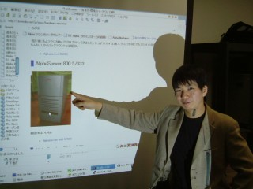

Rubyist Hotlinks 【第 17 回】 青木峰郎さん インタビューイントロ
はじめに
本稿はRubyist Hotlinks 【第 17 回】 青木峰郎さん インタビューのイントロです。あまりにダラダラしていたので、とりあえずページを分けてみました。
インタビュー本編：Rubyist Hotlinks 【第 17 回】 青木峰郎さん
ダラダラなインタビューイントロ
賞味期限
ささだ 読者の人が一番気になるのは、どれくらい古いものまで (賞味期限切れのものに) チャレンジしているかなと。
青木 いま冷蔵庫に 9 月 16 日が賞味期限の卵があるんだけど、食べるべき？
ささだ ニュースで、完璧なゆで卵を作るとかいうネタがあって (パーフェクトゆで卵作成装置…イギリス)、そういうのを使えばきっと、賞味期限が切れたものでも。
青木 完璧かどうかは関係ないじゃん (笑)。完璧なってのは真ん中にあるの？ 黄身が。
ささだ イギリス式の完璧なってのが良くわからなくてさ。
青木 完璧なって、目玉焼きか。
ささだ いや違う違う。ゆで卵で。日本人には良くわからない。なんか上から掬えるようなものっていう。
青木 あー、卵立てに立てるやつか。
ささだ そういう記事が出ていて。そういうのを使えば。
なし崩し的にイタリア旅行話に突入
ささだ ご飯といえば、イタリアの飯はどうでしたか？
青木 旨かったよ、旨いのはね。不味いのはくそ不味かった。
ささだ なんか色々書いてあったね。
青木 12 ユーロのピザはすげー旨かったけど、3 ユーロのピザはくそ不味かった。
ささだ 1 ユーロっていくらぐらいだっけ？
青木 1 ユーロは今 155 円。
ささだ 日本で換金して行ったの？
青木 そう。とりあえず 2 万円分換金したんだけど、やっぱり足りなくて。 向こうで 3 万円追加した。
ささだ 150 円で 12 ユーロということは……1800 円？ 1800 円のピザ？一人分？
青木 そう、一人分。サイズは日本で言う M サイズくらいかな。すごい旨い。
ささだ 質は全然違うと。今回一人で行ったの？ イタリア旅行。
青木 一人で。
ささだ ジョジョ 1 ごっこはしましたか？
青木 「OA ディスクをゲットせよ」2 のライオン像は探したよ。
ささだ 実はそこまで読んでないから分からないんだけど。ボスの秘密をというのだっけ？
青木 そう。ジョジョ第 5 部の最初はボスの手下で始まるんだけど、 ボスに会うためにその OA ディスクを手に入れないといけない。 それを隠してあるライオン像を駅前で探したんだけど、見つからなかった。 どこにあるんだろうなあれ。
ささだ 本当にあるやつなの？
青木 それが分かんないんだよ。
ささだ イタリア、ライオン像……。
青木 ヴェネツィアに在るのか。 あ、ちなみにジョジョといえば、 「英語ではパリスって言うんだがみんなはフランス語どおりパリって発音して呼ぶ」 「でもヴェネツィアはみんな英語でベニスって呼ぶんだよォー」 「イタリア語で呼べ！ イタリア語で！ チクショォ―――ムカつくんだよ！ コケにしやがって！」 っていうセリフがあった3。
ささだ 分かんない。これ、サンマルコ寺院横のライオン像。
青木 あ、サンマルコ広場なんだ。ジョジョのライオン像はサンタルチア駅前にあるんだけど、 サンマルコ広場にあったのかー。あー、そうか今日はパソコンをもってくれば写真が見れたんだった。
ささだ 日記にあるやつじゃなくて？
青木 じゃない。もっとたくさんあるんだよ。200 枚くらい。
ささだ あー、そりゃ残念だ。
青木 写真撮りまくったからなあー。
ささだ 円柱の上の翼の生えたライオン、でいいんですか？
青木 あー、これかなぁ。でもこれは位置が高すぎるよ。4 ジョジョのはもっと低い位置にあった。これくらい (と、手で示す)。
ささだ そんな高いところは取れないと。あの人たちだったら取れるんじゃないかな。
青木 確かに取れそうだけど (笑)
ささだ URL とっておかないと、何しゃべってるかわかんなくなるよねきっと。
青木 そうだね。(ささださんが起動するエディタを見て) ……秀丸かよ。
ささだ 秀丸ですよ。何言ってるんですか。秀丸便利ですよ。だって起動早いじゃん。
青木 vi も早いよ。
ささだ いや、vi 使えないから。
青木 (笑)
ささだ だって、マウスでクリックしてもカーソルは移動するの？ Windows 版って。
青木 移動するよ。gvim なら大丈夫。
ささだ CTRL-C とかでコピーできる？(笑)
青木 それはどうかなー。
ささだ CTRL-Z でアンドゥとか。
青木 無理。
まだまだイタリア
ささだ イタリアのネタを引っ張ったほうがいいのかな。なんか行き当たりばったりな感じで結構日記には書いてあったけど。
青木 本当に行き当たりばったりでした。 (ささださんが Google で日記を検索しはじめるのを見て) …… URL を打つとかいう考え方はないわけですね。
ささだ ないです。俺のブックマークは、Google。
青木 この (ウェブ日記に書いてある) イタリア旅行記がねぇ、アクセスがすごくてさ。 (一気に全部のページを開くささださんを見て) あー、やめてー！
ささだ そんなにやばい？(笑)
青木 tDiary って月単位のページがあるじゃん。 あれだと写真が一気に全部出るんだけど、それに 2、3 人が同時にアクセスしただけで、 ロードアベレージが 2.7 まで上昇してた。
ささだ でも、それぐらいは。
青木 そう？
ささだ ロードアベレージがあがってサーバーが落ちるってのが良くわかんなかったんだけど。
青木 ロードアベレージで落ちたわけではなくて、No memory で Apache が落ちたのね。 そんで、メモリがなくて苦しんだためにロードアベレージが上がったらしい。
ささだ あー、なるほどなるほど。
青木 そんなに起動するんだね、あれ。
ささだ ちなみに、いつもはどのぐらいのロードアベレージなの？
青木 0.1 ぐらい。普段はほんとに 0。それがいきなり 2.7。
ささだ どっかで紹介されたのかな？
青木 いや、アクセスログ見てもリファラ見ても何もなかった。
ささだ 普通の巡回コースの人たちが、普通にやって落ちてたのか。
青木 それだけで落ちるってのもちょっと貧弱だよね。もうちょっとなんとかならないかな。 それこそ (Apache の設定の) MaxClient がちょっとでかすぎたのかな。
ささだ いくつにしてたの？
青木 150。
ささだ 150 で駄目なんだな。 大変だね、きちんとたくさんアクセスあるようなサイトを運用すると。
で、いつぐらいから計画してたんですか？ イタリア旅行は。
青木 行こうとは前から思ってたんだけど、確実に決めたのは一ヶ月前。 突然やはりもう、やっぱり行こうと。
ささだ LL ring が旅行にかかるからどうのと言ってたじゃん。 そう考えると結構遅くなったんだよね。
青木 ああ、あれは何とか (LL ring から) 逃げようと思って言っただけ。
ささだ (笑)。なるほど、結局逃げられなかったと。
イタリア語とか勉強してったの？
青木 行く飛行機の中でちょっとだけやったよ。
ささだ 地球の歩き方とか？
青木 イタリア語会話がシチュエーション別に書いてある旅行用の本を一冊買った。
ささだ それはちゃんと役に立ったというか、普通に会話できた？
青木 うーん、まぁそこそこかなぁ。ほんとに片言しか使わないから。 それこそ数字は 1 (uno) か 2 (due) ぐらいしか使わなかったし。 それに観光地だと結構みんな英語が使えるんだよ。そうするとつい英語でしゃべっちゃう。
ささだ 英語が通じたから不便は無かったの？
青木 うん。
ささだ その辺のバイトのおばちゃんとかでも通じるの？
青木 それだとちょっときついかな。でもそういう人とはそもそもしゃべることが無い。
ささだ こう指差してこれ、みたいな。
青木 そうね。何か買うだけなら、大体一人で行くからひとつでいいじゃん。 だから「Uno 商品名」で。あとはペルファヴォーレ (per favore) とか言っておけばいい。 per favore って言うのは英語の please ね。
ささだ その発音でいいの？
青木 うん。
ささだ へぇ。
青木 イタリア語って、発音がめっちゃ簡単なんだよ。 発音が英語っぽくなくて、すごい日本語に近い。母音も「あいうえお」しかないし。
ささだ はっきり言えば通じるんだ。
青木 うん。ほんとにね、向こうが言ってるのも聞き取りやすいし、言うのも簡単。 ウーノカップチーノペルファヴォーレ (カプチーノ 1 つください) って言えば通じる。
ささだ あー、それで通じるんだ。
本屋さんとか行った？
青木 行かなかったな。そういえばイタリア語の Ruby 本ってあるのかな？ 本屋ってあんま無かったね、そもそも。
ささだ ずっと観光名所めぐりだったの？
青木 そう、ほんとに。何でだろうな、本屋が無かったのは。
ささだ 観光地には無いとか？
青木 あー、そうかも。あとあんまり目立たないのかな。
ささだ まさか本屋がないって事はないよね。
青木 あるんだろうけど、目に入らなかったんだろうね。
ささだ 観光地っぽいところにはそんなに無いのかな。
青木 それこそ、日記にも書いたけど、迷子になってることが多かったからさ。 そうすると焦って本屋どころではない。
ささだ (笑)。なんか最初からドキドキしてたよ、読んでて。面白かったんだけど。
青木 何回、日本に帰れなくなるかって思った。
ささだ 今回はツアーを頼んだの？ ツアーって言うか、チケットも駅も何時に行かないとまずいって言うような。
青木 そういうのはね、全部手配してもらった。大学生協で。 だからホテルのチケットと電車のチケットと飛行機のチケットは取ってあった。 それは全部時間も決まってるし、座席も決まってるから、それに間に合わないと、 それこそ自分で買いなおさないといけない。でも、かなり全体としてギッチギチだから、 買いなおしても間に合わない可能性があるわけ。
ささだ 間に合わなかったら中一日はどっか飛ばすとかそういうことになるのね。最終日に間に合わないと……。
青木 帰れない。
ささだ 本当に帰れなくなるのかな。
青木 どうなんだろうね。金がなくなったら日本大使館に行って、 日本に行ってから返すから何とか貸してくださいみたいにお願いするしかないのかな。
ささだ 良かったね、帰れて (笑)。
青木 よかったね (笑)。
ささだ 夕食がカロリーメイトとか。カロリーメイトとか売ってたんだ。
青木 持っていったんだよ。食えなくなったら死ぬから。
ささだ 俺はそういう経験ないけど。アメリカだったらそういう心配は無いか。
青木 日本だったらコンビニが 24 時間営業してるけどさ、イタリアはそうじゃないから。
ささだ 夜中歩いてたときって、パブとかそういうところしか開いてない感じ？
青木 パブも、下手すると開いてない。
ささだ じゃ、ほんと暗いんだ。
青木 それもさ、夜も遅くまでやってないで、7 時ぐらいになると閉まり始めるんだよ。
ささだ 飲み屋が？
青木 普通の店が。全体的に日本ほど一人者に親切じゃないので。
ささだ なるほどね。
まだまだまだイタリア
ささだ (旅行記を読みつつ) ゼロオリジンって面白いね。階が。
青木 そうね、あれはびっくりしたよ。 その場に行って始めてフランス語の教科書に書いてあったのを思い出した。
ささだ ヨーロッパではそうなのかな。
青木 そうらしいよ。
ささだ へぇー。
青木 確か一階がグラウンドフロアっていうんだよね。
ささだ じゃ、二階建てって言うと……。
青木 二階建ては……何て言うんだろ (笑)。やっぱ「二階建て」じゃないかな。
ささだ 二階建てって言う言い方が無いとか？
青木 無いかもしれない。
ささだ 二階建てで、0 階、1 階がありますと。なんか配列っぽいね。
青木 配列っぽいよね。……すると、Pascal の人はヨーロッパの人じゃないのかな。
ささだ Pascal って 1-origin だっけ。
青木 1-origin じゃない？ もしかして、決められるんだっけか。
ささだ 決められるの？
青木 できるでしょ。
ささだ Pascal 知らない。
青木 なんか、Ruby の Range みたいな文法でさ。
ささだ ああ、Fortran みたいなやつかな。下限と上限を決められるという。
青木 だと思ったよ。
まだまだまだまだイタリア
ささだ ジェラートは食べなかったんですか？ スペイン階段5。
青木 うん。あれってさ、ローマの休日でもスペイン階段で食ってたっけ？
ささだ あー、どうなんだろう。
青木 それがちょっと思い出せないんだよ。
ささだ なんか、「イタリアと言えば階段でアイス」って、そんなイメージ無い？
青木 うん、あるある (笑)。
ささだ で、日本人が大量にいてとか、なんかよくテレビで見てたけど。
青木 いたいた。どこ行っても日本人がいる。
ささだ あ、そうなんだ。
青木 だから、心強いといえば心強い。
ささだ いざとなったら泣きつける。すみませーんとかいって。そこに Rubyist がいれば。
青木 (笑)。いねーよ、ぜってーいねー。
ささだ イタリアに Rubyist っているのかね？
青木 まあそりゃいるでしょ。
ささだ なんかさ、ruby-talk かなんかでさ、 これからイタリア行くからちょっと誰か遊んでよとか言えばさ、 遊んでくれたんじゃないの。
青木 あー。
ヴェネツィア
ささだ ヴェネツィアに行きたかったってこと？
青木 そう。ヴェネツィアいいよ (笑)。
ささだ ゴンドラの話がありましたが、でかいの？ ゴンドラは。
青木 最大 5、6 人だと思う。椅子は 6 人分あったかな。
ささだ 3 人 + 3 人みたいな感じ？
青木 いや、コの字型に、2 人 × 3。

ささだ あー、はいはいはい。じゃ、囲んで座るんだ。なるほど。どこに座ったの？
青木 一番後ろのとこ。あとね、ゴンドラの形は左右対称じゃないんだよ。右に傾いてる。
ささだ いくらくらい？
青木 60 ユーロ。
ささだ 60 ユーロ。1 万円ぐらい？
青木 だね。
ささだ 何分ぐらい？
青木 30 分ぐらいだったかな。
ささだ 30 分 1 万円かぁ。
青木 高かったよー。
ささだ 1 人なんだよね？
青木 うん。一船いくらだから。
ささだ じゃ、6 人で乗ればお得。
青木 そう。1/6 なんで。
ささだ タクシーと同じなんだね。
青木 だからね、みんなで行ったほうがいいよ (笑)。一人で乗るもんじゃないよあれは。
ささだ 相乗りするものでもない？
青木 相乗りもあるらしいよ。ツアーというのがあるらしいんだけど。 なんとなくその日は交渉してみたい気分になった。
ささだ なるほどね。その時は英語で交渉？
青木 うん。
ささだ なるほど。英語できるんだもんな。案内とかしてくれたの？
青木 うん。ここはマルコポーロの生家だー、とか。
ささだ 英語で？ イタリア語で？
青木 大体単語だけで。「マルコ・ポーロ」とか。
ささだ あー、なるほど。……歌とか歌ったりとかは？(笑)
青木 それはない (笑)。特別コースなんだよ、歌がつくのは。 それやるとたぶん料金が跳ね上がる。乗ってるのはだいたい日本人だね。
ささだ (笑)。なるほど。ほかの人が乗ってるのは見た？
青木 見た見た。たくさんいるよ。本当にそこら中にいる。歌ってるのも一回だけ見たかな。
ささだ それは船の隣で聴いてればなんかいいような。
青木 いやいや (笑)。
ささだ 船頭さんは男が多い？
青木 女はいなかった。少なくとも見なかった。
ささだ ウンディーネは嘘だと (注：『ARIA』という漫画のネタ)。
青木 嘘です。……っていうか、ARIA 読んでたのか。
ささだ (笑)。
青木 ゴンドラ漕ぐの大変だしね。アリスとか漕げないよね、絶対。
ささだ 天才じゃないですか。
青木 天才だから漕げるのか？
ささだ 女の人しかいないよね。逆にサラマンダーの女とかいないし。
青木 ああ、そうね。それはご都合主義で。
ささだ ウンディーネに男がいたらちょっとあれだよね。売り上げ落ちそうだよね。
青木 (笑)。だいたいウンディーネって名前で男はおかしいよね。
ささだ イタリア語って男性形と女性形に分かれてる？
青木 分かれていると思う。Uno が変化してたような気がするし。
ささだ そういうのを気にしながらしゃべってたの？
青木 全然。
ささだ (笑)。適当に言ってれば分かるのかな。こいつ間違ってるよ、みたいな。
青木 たぶんねー。俺らも外人の日本語はなんとなくわかるしね。
ささだ 他何か印象深いところとかありました？
青木 印象深いところか……。そうそう ARIA ついでに。 ARIA のゴンドラ屋は設定で住所が決まってるらしいんだよ。 ARIA カンパニーとか、オレンジプラネットとかの。だからその住所を探してみたんだけど。
ささだ 探したんだ。
青木 一応探してみました！ けど、よくわかんなかったねぇ。 ARIA カンパニーはスキアヴォーニ河岸ってとこで、 サンマルコ広場の先の海沿いのはずなんだよ。 それであの絵なら大体あそこしかなかろうと。
ささだ なんか写真であったね。
青木 他のところは良くわからなかった。
ささだ ARIA に街中を探検する回あったじゃん。あれをやってみるとか (笑)。
青木 あれはねー、嘘だと思うよ。あんな高台ないもん。
ささだ (笑)。坂とか無いの？
青木 無い無い。全部平地。それこそほんと、アクアアルタ6で沈むぐらいだからさ。
ささだ あーなるほどね。あれ (アクアアルタで) は普通にあるの？
青木 うん。
ささだ あれは結構感動したんだけど。ちゃんと水没するんだって。
青木 俺も地球の歩き方を見て、初めて本物だということを知ったよ (笑)。
ささだ (笑)。(写真を見て) これか。
青木 これはなんというかね、地球温暖化の影響らしいね。
ささだ 現実的ですね (笑)。これ、この季節だからって事？
青木 だと思う、たぶん。やっぱ秋から冬にかけてみたいだね。
ささだ なるほどね。
まだ続くイタリア話
青木 スリにも会うしさ。
ささだ でも盗られなかったんでしょ？
青木 盗られなかったけどね。
ささだ 怖いね。あんまり会わないよね、そういうのに。
青木 会わないだろうと思ったら、いきなり会うからさ、初日から。びびりましたよ。
ささだ 今回はトランクをずっと引っ張りながら？
青木 引っ張りながら。
ささだ 軽装で行けばよかったのにね。
青木 それは無理だ。荷物を預けて軽装になるのは可能だけど、 まったく持っていかないのはさすがに無理だな。
ささだ 無理かな。
青木 でっかいリュック背負って行けばあれかもしれないけど、それだと今度、それこそスリがやばい。
ささだ そうなの？
青木 ナイフでスッと切ってヒュっとそこだけ、とかあるらしい。
ささだ というかさ、海外旅行に何を持ってく？ でかいものって。
青木 服かな。でかくはないが数がいる。
ささだ 服でしょ。別に服盗られてもいいじゃん。
青木 いやいやいや。服はいいけどそれとは別に金とかさ。
ささだ 金とかは他のところに持って。
青木 盗られてもいいといっても、やっぱ切られたら嫌。嫌というか、穴が開くから不便じゃない？
ささだ 不便だけど。だらだら重いものを持って行くのよりは良いかなと。 高橋さんなんかさ、Ruby カンファレンスにいつもリュックひとつでさ7、あれすごいよね。 前田さんはさ、なんかでっかいスーツケース持ってさ、あなたどこに何しに行くんですかとか思って (笑)。
青木 (笑)。
ささだ なんか人によって違って面白かったけど。
青木 そうだねぇ、でもやっぱりちょっとはいるでしょ。高橋さんは少なすぎ (笑)。 特に今回はホテルも色々変わるから、洗濯するわけにもいかないしさー。
ささだ ホテルはどうでした？
青木 やっぱり日本に比べると全体的に劣るよね。
ささだ インターネットアクセスなんかは。
青木 もちろん無い。カードキーすらない。
ささだ カードキー、日本にも無いと思うよ。
青木 え、そうかな？
ささだ 俺、おとといぐらい、木曜、金曜と豊橋の駅前に泊まったけど、普通に鍵だったよ。
青木 あ、そう？ そんなもんかな。 アメリカのホテルもカードキーだったから普通かなーと思ってた。 でも民宿以外は大体カードキーだな、いままで泊まったとこは。
ささだ 民宿でカードキーあったらすごいね (笑)。
青木 カードキーで横にギュッって？ 意味ねー (笑)。障子なんか余裕で穴開くし。
ささだ (笑)
賞味期限と吉野家について
青木 賞味期限の質問があったけど、割と普通に賞味期限を破ってるので書いてないだけです。
ささだ 最近は賞味期限切れの食べ物を食べてないのという。 普通に破ってると。平均どれぐらい破ってるんですか？
青木 平均？
ささだ 一ヶ月ぐらいとか。
青木 え、一ヶ月すぎ？ 魚はやばいでしょ、一ヶ月も過ぎたら。
ささだ (笑)
青木 魚はさすがに賞味期限の倍ぐらいで何とか。
ささだ 今は全部自炊？
青木 自炊したいなぁ、と思ってはいるけど、 なぜか吉野家とか松屋とかセブンイレブンとか……。
ささだ なんで吉野家と松屋？
青木 吉野家と松屋は、大学の近くに両方あるんで、つい。
ささだ 学食とか食べないの？
青木 学食はあんま安くないんだもん。
ささだ そうなの？
青木 学食で食ったら、吉野家で食える。
ささだ ふーん。あそこの学食ってあまり多くないって言うか。どういうレベルなんだろう？
青木 一般的じゃないかと思うんだけど。
ささだ 生協のやつ？
青木 そう。普通の大学生協。
ささだ どのくらいするのかな。
青木 大体、カレーが 400 円ぐらいとか。
ささだ それ高いよ。
青木 そう？
ささだ 農工大 210 円だったもん。
青木 何、その安さは！
ささだ え、なんかこう、本格的なルーを別に出してくるようなカレーじゃなくて？
青木 いやいや、めっちゃ安いカレーで。
ささだ カレー 400 円は高いよ。
青木 そうかなあ？ そんなもんじゃないか？
ささだ いやいやいや。それはぼったくり。きし麺とか 210 円だったよ。
青木 きし麺とかは安いかもしれない。
ささだ カレー、何か違うんだよ。
青木 カレールーが違うのかな (笑)。 そうだなあ、安く済まそうと思えばさ、230 円ぐらいのおかずはあるけど。 でもなー、ご飯と味噌汁追加したりすると、やっぱ 400 円ぐらいになるじゃん。
ささだ まぁ、300 円か 400 円ぐらい。
青木 それだったらさ、吉野家で食えるじゃん。豚丼並に味噌汁、卵で 430 円。
ささだ 吉野家ってさ、味噌汁別なのが許せないんだけど。
青木 そうか？
ささだ 30 円ぐらいだっけ？
青木 50 円。
ささだ 50 円って、松屋だったらついてくるじゃん。
青木 松屋あまり好きじゃないんだよね。
ささだ そう？ 吉野家のほうが良い？
青木 丼物はやっぱちょっと吉野家のほうが好き。
ささだ へぇ、そうなんだ。あと、吉野家だと後払いじゃん。それがちょっとめんどくさくって。
青木 後払いのほうが楽じゃない？
ささだ ええ、そう？ だってさ、食品触ってる手で金触るなよ、とかさ。
青木 いやいや、おれはむしろ食券買うのがめんどくさい。
ささだ ああ、なるほど。
プロフィールというか、ハードウェアについて
青木 (質問表を見つつ) マシン関係の話が多いね。やっぱみんなあれは興味があるのかな。 
ささだ とりあえず、お約束みたいなもんじゃないですか。
青木 そうか。でも Developer Conference のとき……ああ間違えた、 でう゛ぇろっぷめんとえんぱいろめんとかんふぁれんす……って、言いにくいよなぁ、あれ。
ささだ (笑)。
青木 DECon にしよう。Development Environment Conference8 で DECon ね。 あのときもさ、俺だけ妙に質問がいっぱいあったし。やっぱ珍しいのかな。
ささだ ていうか、突っ込みやすいんじゃない？
青木 そう？
ささだ だって、「CVS で設定ファイルを管理してます」って当たり前じゃん。 それに対して「いや、そこはやっぱり……」とか言いづらいじゃん。
青木 (笑)。それにしたってさ、他の人に対してはあまり質問なかったじゃん、あの日は。 俺 (のマシン関係) だけは質問がいっぱいくるなぁと。
ささだ だから、突っ込みやすいというのが。キャラクターというか。
青木 最近使ってないけどねぇ。
ささだ キャラ作り。とりあえず Alpha9。
青木 Alpha ね、終わっちゃったしね。
ささだ Alpha に頬ずりはしてますか、最近？
青木 最近もなでてますよ。
ささだ なでるか。頬ずりじゃないか。
青木 やっぱいいよね、ラックマウントは。
ささだ 新しいマシンが来たらどうするの？
青木 え、どうすると言われましても。
ささだ あれはそのまま？
青木 もちろんそのまま。
ささだ コレクションがどんどん増えていくとか？
青木 スペースがある限りは (笑)。 でもねえ、これからは金は出来ても暇は無いという状況になりそうな予感がそこはかとなく。 欲しいことは欲しいけどねぇ。
ささだ 買い始めたのはいつぐらいですか？
青木 2002 年か 2003 年。
ささだ じゃ、プログラミング始めてからマシン買い始めるまでに結構あったの？
青木 そうだね。四年目か五年目ぐらい。
ささだ なんでそんなところに転んだの？
青木 最初は、Alpha はねえ……あ、そうか。Racc が Alpha で落ちるっていう報告が……。
ささだ (笑)。
青木 そういう話が来て、なんかどうしてもこれテストしたいなーって思って (笑)。
ささだ じゃ、Racc は Alpha で使ってる人がいたんだ。
青木 いたんだかなあ。 knu さんが、FreeBSD の ports で落ちるっていうバグレポートをくれたんだよ。 でも、そんなこといわれても (笑)。
ささだ (笑)。Racc の問題より、Ruby の問題じゃないの、それは？
青木 そうね、たぶん Ruby の問題だったと思う。 正規表現のどっかで落ちてるとかいう話もあったし。
ささだ 対応できたの？ それ。
青木 いや、結局そのときはわかんなかった。
ささだ で、Alpha でバグレポートが来て、で、Alpha を買って調べた？
青木 調……べた。一応。それに Alpha には憧れみたいなものがあったし。
ささだ なんかいいぞー、っていう話は聞いていたと。
青木 うん。安かったら買ってみようかなって秋葉原行ったら、高かったんだよね。 でも、なんかかっこよくてさ (笑)。
ささだ (笑)。そのころだといくらぐらい？ 30 万とか。
青木 いや、それはもう古いやつだったから 6 万だった。
ささだ 6 万は高いの？
青木 高いよ！ いや、ほんとに古いのでいいから、安いのが欲しいなと思ったの。 1〜2 万円ぐらいで、超古いのがあれば欲しかったんだけど、そんなの無くて。
ささだ 6 万のしかなくて、諦めていた？
青木 買った。がんばって買った。
ささだ 買ったんだ (笑)。
青木 いや、だってさー、メモリスロットが 32 本もあるんだよ？！ 筐体もでっかいしさー。あれは買うでしょ。
ささだ いや、そんなこと言われても (笑)。
青木 そんなメモリスロットが 32 本もあるマシンなんて見たことが無かったから。
ささだ でも、使ってるの 1 本なんでしょ？
青木 いやいや、フルに刺さってたよ。
ささだ え、そうなの？ 何ギガ入ってたの？
青木 512 メガ入ってました。
ささだ えーっと、割る 32 ということですか、1 スロットに。
青木 うん。16MB × 32 かな。1 バンク 8 スロット。
ささだ なるほどね。
青木 当時としては 512 メガはすごかったんだけどね。パソコンにもそんなに無かったし。
ささだ OS とかは？ 普通に Linux 入ってたの？
青木 最初は FreeBSD/Alpha を入れたよ。 FreeBSD のバグレポートが来たから、とりあえず FreeBSD。 バージョンは 4.3 だったかな。
ささだ 再現して、デバッグして。
青木 再現はした。デバッグもしたんだけど、よく分からなかった。 GDB の動作がなんかおかしかったんだよね。 今考えると、たぶん最適化オプションを付けてしまったのが良くなかったんだと思う。
ささだ 最適化オプションをはずしたら、それ再現しなかったんじゃないの？
青木 いや、再現したような記憶がある。 その頃はまだ GDB の Alpha 対応が悪くて変なことになってたんだと思う。 何ていうか、インライン展開してるのに、それがちゃんと反映されなくて、 訳が分からないことになってる、みたいな。
ささだ 今でもそれあるけどね。
青木 特に最近は多くなったよね。GCC の最適化がすごくなってきて。
ささだ あー、そうかもしれない。
青木 YARV も結構痛いよね、あれ。 落ちたときどこにいるのか全然分かんないことがあるじゃん。
ささだ だから、インライン関数を使っていると、その caller の場所が知りたいのに、 そのインライン関数が呼ばれた先の行番号しか分からない、というのがあるので。その辺は勘 (笑)。
青木 (笑)。勘かぁ。
ささだ インライン関数やめればいいのかぁ。デバッグ時に。
青木 あれって、static inline でも、最適化 -O0 にしたらインライン展開しないんだっけ？
ささだ 知らない。試してない。試せばいいんだろうけど。めんどくさいですね。
で、Alpha を一台買って。
青木 買って……。あ、思い出した。 最初はね、別の 4 万のがあって買ったんだけど、それが動かなかったんだよ。
ささだ 動かなかった (笑)。
青木 なぜ動かなかったかと言うと、Windows 専用マシンだったから。
ささだ Windows 専用 Alpha ？ 何それ？
青木 Alpha にはファームウェアが ARC っていうのと SRM っていうのと二種類あんのね。 で、その SRM っていうのでないと、UNIX 系 OS は動かない。
ささだ ほう。
青木 動かないとは言わないけど、動かしにくい。 最初に買ったマシンには、ARC しか乗っていなかったので、Windows しか動かなかった。
ささだ ふーん。
青木 Linux/Alpha だけは ARC からも起動できるんだけど、超不安定。
ささだ ARC ってのは何？
青木 ARC というのは、ファームウェア。Advanced RISC Computing という。
ささだ 何で使えないの？
青木 んー、何ていうのかな。 ファームウェアの中に PALcode っていう特権命令ライブラリが入ってんのね。 その PALcode は完全に機種依存 (本当に型番ごとに違う) で、 BIOS みたくメモリ上に残って OS から呼ばれるわけ。
ささだ NetBSD とかは SRM の機能を使ってるから、それが足りなくてと。
青木 そうそう。それに SRM ってのは、 もともと digital UNIX っていう UNIX を動かすためのファームウェアだから、 PALcode の API も UNIX っぽいのね。 それに対して ARC はもともと Windows のために作ってるから、 すごい Windows べったりなんですよ。
ささだ なるほど。Linux は Windows べったりの API の上で作ってるから動くと。
青木 そうそう。あ、もしかすると Linux は PALcode 自体置き換えてたかもしんない。 機種ごとにカーネルがあるから。
ささだ なるほどね。でもこの SRM ってのをどっかからパクってきて載せればいいんじゃないの？
青木 出来るのもあるんだけど、それは出来ない。 PALcode は機種依存だから他の機種のは流用できないし、 最初に買ったマシン (XL366) には書き換えインターフェースもない。ハードウェア的に。
ささだ え、でも。ROM を直接叩くような設計だから無理ってこと？
青木 たぶん。
ささだ なるほど。途中で書き換えるとか出来ないんだ、そこの部分を。
青木 たぶん ROM に入ってる (static RAM ではない) ので書き換えられない。
ささだ まぁ、それで 4 万円のやつは、お蔵入りと。でもまだ持ってる？
青木 持ってるよ。Windows は動くって言うからさ、そのうち AlphaNT 入れればいいやって。
ささだ で、動かしたことあるの？
青木 AlphaNT はないなあ。OS が入手困難なので。 代わりに Linux を一応動かしてみたけど、動かしただけ。 だってあれさー、ARC だとすげー不安定なんだもん。
ささだ それで、2 台目を買って、それに FreeBSD を入れて。 それで転んでどんどん買うようになったと。
青木 うん。その前にね、もうひとつ切っ掛けがあって。 その頃 2ch に性善説サーバー10というプロジェクトがあったんだよ。 誰でもログインできるサーバ。 それに Solaris が入ってたんだけど、それにちょっとログインしてみたら面白くてさー。
ささだ それは他の人のサーバーを触らせてもらって？
青木 そう。しかも誰でも root になれんの。 Ruby と tDiary 入れて「性善説日記」とか書いてたなあ。 それで色々やってるうちに Solaris を自分で動かしたくなったんで、SPARC 買ったのね。 Ultra30 ってマシン。それ以来、いろんな OS が試してみたくなって、ドバーっと一気に行ってしまった。
ささだ (笑)。
青木 ハードウェアを使いたいというのもあったんだけど、 同時にいろんな商用 UNIX が使いたいという欲望もあったわけ。 その 2 つがこう、イイ感じにかみあって、一気に行っちゃった。
ささだ (ハードウェアリストを見つつ) 持ってるマシンはここ (青木の環境 (ハードウェア編)) に全部書いてあるの？
青木 最近買った Thinkpad X60 以外は書いてあるかな。
ささだ どれが最初のやつ？
青木 最初って Alpha の最初？ AlphaStation 600 ってやつ。じゃねえや。 最初に買ったのは Alpha XL366。ああ、あったあった。これなんだけど。
ささだ これが動かなかったって言う？
青木 そうそう。それが NT 専用マシン。
ささだ これかっこいいかな？
青木 かっこいいじゃん。これは写真が悪いんです。実物見るとかっこいい。
ささだ そんで、その次は？
青木 その次は AlphaStation 600。それ。
ささだ かっこいいかなぁ？！
青木 かっこいいって！ でかいし！
ささだ (笑)。でかいのなら別に、その辺に売ってるじゃん。
青木 そう？
ささだ ATX のでかいの。
青木 えーっ、あんなの駄目だよ。めっちゃ軽いじゃん。
ささだ 確かに軽いね。
青木 あんなフワフワのねぇ、図体だけでかいのは駄目です。
ささだ つーか、(AlphaStation 600 が) 30 キロ？ 何が入ってるのこれ？
青木 筐体自体も重いんだけど、一番重いのは電源かな。
ささだ 電源がごつい？
青木 なぜか、ごつくなくても重い。
ささだ 何が入ってるの？ ファンが、何かすごい金属で作られてるとか。
青木 何でだろうね、あれ。俺も不思議なんだよ。ヒートシンクがでかいのかな。
ささだ あー、なるほど。電源トラブルは全然無いんだ。
青木 んにゃ、古いのはやっぱさすがにだめになりつつある。ただ、家では今のところはない。
ささだ ATX にそういうごつい電源買ってくれば満足する？
青木 うーん……やっぱ既存のは嫌だな。デザインがしっくり来ない。
ささだ DEC のはしっくり来るんだ。
青木 ATX の既存のやつって色使いが微妙。 電源スイッチに無造作に青とか緑が使ってあったりさ、気持ち悪いんだよね。
ささだ それは何がまずいの？
青木 かっこ悪いじゃん。安っぽいよ！
ささだ (笑)。
青木 そんな所に緑色のプラスチック使うなよ！
ささだ 重厚感のある、お前ら触るな、みたいな。
青木 そういう拒絶感のあるようなやつがいいよね。
ささだ えー。…… 30 キロって手で持ってきたんだ。秋葉原から？
青木 そう。秋葉原から。
ささだ カートかなんかで？
青木 カートで。冷蔵庫みたいな感じだよねぇ。 さすがに見兼ねたらしくて、色んな人が手伝ってくれたよ。駅で。
ささだ (笑)。日本人のやさしさを感じる。
青木 そうだね。日本人にはまだ他人を思いやるやさしさが残ってました。
ささだ でも、何に手伝われたの？ エスカレーターとかで普通にこう。
青木 そのときはまだエスカレーター無かったんだよ。あちこちの駅に。
ささだ あー、そうなの。
青木 エレベーターも工事中だったし。
ささだ はいはいはい。それを階段で (笑)。
青木 きついよ。全部階段で。がんばったよ俺は。
ささだ それは確かに手伝ったかも。
青木 その上のさ、紺筐体のマシン (AlphaServer 800 5/333) もいいじゃん。
ささだ これはまぁ、かっこいいかなという気がするね。
青木 これが一番かっこいいね。
ささだ あ、そうなんだ。これを買ったのは結構後の話？
青木 そうだね。AlphaServer 800 は 2003 年あたりかなあ。
ささだ 見つけて即買いみたいな？
青木 いや、悩んだ。 買ったのよりずっとスペックがいいのがあったんだけど、17 万もするから悩んでたんだよ。 ところが悩んでる間にそのいいのが買われてしまった。 んで、買われてしまった悲しさのあまり、別のを 2 台まとめて買っちゃった。
ささだ (笑)。AlphaServer 800 を 2 台？
青木 いや、AlphaServer 800 を 1 台と、あと digital PersonalWorkstation 600au。 結局 2 台合計したら最初のと同じぐらいの金額になって泣いた。
ささだ (笑)。でもこれ (PersonalWorkstation) かっこいいかなぁ。
青木 かっこいいって！ あのね、これは並べないとね分からないんだよ、真価が。 3 台ぐらい並べると、かっこよくて死ねる。
ささだ Alpha って並べるもんなの (笑)？
青木 並べるもんだよ！ だってほら、かつての DECluster、 いまの名前だと TruCluster だけど、そういうのがあるくらい、 クラスタは Alpha の十八番ですから。VAXcluster 以来の DEC のお家芸ですよ。
ささだ あー、なるほど。でもこんなの並べたらなんか、重いし場所取るしで、大変じゃない？ データセンターとかこういうの並んでるのかな。
青木 並んでたんだろうな。かつては。
ささだ 30 キロの筐体をガンガンガンガンと並べて。で、Sun の最初のやつは？
青木 Sun Ultra30。そう、それ。これはまぁ……。
ささだ これは Sun っぽい？
青木 まあ、残念ながら OEM なのでロゴは Sun ではないんだけどね。 やっぱほんとは Sun 純正のが欲しいね。
ささだ (純正品は) 買ったの？
青木 買わなかった。高いから。 やっぱみんな気持ちは同じらしくて、ロゴが Sun になるだけで 1 万円くらい高くなったりして。
ささだ Sun はこれだけ？ Sun というか、SPARC か。
青木 それだけかな。いちおう、SPARCstation 5 っていうのがあるけど。 通称ピザボックスと呼ばれてるやつね。 あれは筐体が欲しかったので 1 台買ったけど、非常に遅いので使ってない。
ささだ なるほど。SPARC のいくつが？
青木 Ultra30 は、Ultra SPARC II の 250MHz。
ささだ それ、使えるの？
青木 一応使える。クソ遅いけどね。Ruby で make test-all すると 20 分ぐらいかかる。
ささだ あー、それは大変だね。いま T1 とかでてるじゃん。ああいうの欲しい？
青木 あれは別に……。
ささだ あまり CPU にはこだわらないんだっけ？
青木 うーん……いや、こだわってないわけではないんだけど……そうねぇ、筐体によるね。
ささだ (笑)。
青木 筐体がかっこよければ買うかな (笑)。 CPU は今はわりと Athlon がいいなぁ。Athlon ていうか、Opteron ね。
ささだ Opteron 結局買ってないの？
青木 買ってないんだよなあ。欲しいんだけど。
Opteron と 16 コアマシンと YARV
ささだ いま Opteron がさ、何か 4 台 CPU が載っけられるやつがあるというふうに聞いて。
青木 え、どこに 4 つ？
ささだ マザーボードが。
青木 ああ、それはもちろん。8 ソケットまであるでしょ？
ささだ 8 CPU のがあるの？ 秋葉原とかで売ってる？
青木 秋葉原では……売ってるかなあ。ないんじゃないかな。
ささだ あ、TSUBAME かぁ。そういう専用で作るのはもちろんあると思うけど、売ってるやつ。
青木 うーん、そのへんで店売りしてるかはともかく、あると思うけどな。 そもそも Opteron 8 系は 8 ソケット用なわけだし。
ささだ そうか。研究用に欲しくってさ。
青木 え、8 way マシンを？！ いや、4 way を？
ささだ 8 あるんなら、8 で。ボードだけで 10 万とかなのかな。いやいや、10 万じゃ買えないな。
青木 買えない買えない。
ささだ 20 万とかで。
青木 今だと、ボードと筐体とセットで……うーん、40 万ぐらい？
ささだ あ、そんなもん？ あ、そうか、CPU 別か。
青木 うん。CPU が 1 個 10 万とかでしょ。
ささだ あ、10 万で買える？ 10 万から 20 万とかじゃなくて。
青木 買えるっしょ。
ささだ 安い Opteron しかでてこないよね、ネットで。
青木 そうだね。売れないから 8 系はあんま出ないよね。
ささだ 8 系って何になる？ 型番。
青木 えーと、ちょっと前は 845 とかそういう感じ。……850 か。
ささだ (ウェブで値段を調べて) あ、でも 10 万ぐらいだね。
青木 デュアルコアの速いのは 865 とか 875……いや違う 880 か。それそれ。20 万か。
ささだ デュアルコア CPU を 8 ソケットマザーとかに乗せて……。
青木 そんなもん何に使うの？
ささだ いや、(YARV の) 評価 (笑)。
青木 それだけかよ！
ささだ いまデュアルコアで評価してるんだけどさ、並列 Ruby の方。 いやー、デュアルコアで評価してもなぁっていう。2 並列で並列効果でましたっていってもしょぼいよね。で、今その 8CPU とか 64CPU とかはあるけど、買えないじゃんそんなの。 研究費で、みたいな。そういう安いところで、100 万ぐらいで買えるのかなって思ったんだけど。
青木 いまはそういうマシンだと Opteron が一番安いのかなぁ。
ささだ T1 みたいなのをひとつ買って、32 コアでとかなんか。
青木 T1 って、SPARC だよね。ということは、Solaris で評価するの？
ささだ まぁ、Solaris で。だからまぁ、Soralis で動かないと。 どうなんだろうね、Ruby を Solaris で使ってる人いるのかな。
青木 結構いるんじゃない？
ささだ いる？
青木 と思うよ。
ささだ Solaris で Rails？ Java 使えよっていう (笑)。
青木 (笑)。いや、でも割といると思うけどね。
ささだ あ、そうなの？
青木 いやまあ 100 人以上はいると思うけど、っていう話ですが。
ささだ さっき聞こうと思ってたんだけど、Alpha の FreeBSD で Racc でってのは、 どれくらいの需要があったのかなぁっていう。
青木 まぁ、せいぜい 2 人か 3 人でしょ。
ささだ 2 人か 3 人 (笑)。
青木 あ、でも RDtool が使ってるから、間接的に使ってる人はまぁいるのかも知れない。
ささだ あー、なるほどねぇ。でも Alpha 自体がねぇ、今ねぇ。
青木 そうだねぇ。ぶっちゃけ死んだ CPU ですから。
ささだ Opteron にカリカリにしていけばいいのかな。今後は。
青木 いいんじゃん？ Opteron でいいと思うよ。
ささだ Opteron、8 コアでとか。そんなにたくさんいらないよなぁ。
青木 (笑)。でも今度、そろそろ来年辺り 4 コアがでるじゃん。 そしたらこう、あっという間に 8 コアが出てさ、 一人で 16 コア占有とかいう話も割と近いんじゃない？
ささだ 2〜3 年後にはもう普通だよね、きっと。16 まで行くか分かんないけど。
本編へ戻る：Rubyist Hotlinks 【第 17 回】 青木峰郎さん
-
週刊少年ジャンプに連載されていた漫画「ジョジョの奇妙な冒険」のこと。第5部の舞台がイタリアだった。 ↩
-
ジョジョの奇妙な冒険 54巻「ヴェネツィア・サンタ・ルチア駅 『OAディスク』をゲットせよ！」 ↩
-
55 巻ギアッチョ [スタンド名：ホワイト・アルバム] のセリフ ↩
-
スペイン広場にあるトリニタ・デイ・モンティ階段の通称。映画「ローマの休日」では、この階段でオードリー・ヘプバーンがでジェラートを食べた。 ↩
-
ヴェネツイアなどで発生する高潮。地下水などが溢れ、街中が水浸しになる。 ↩
-
ささだ注：今年の RubyConf では、和服を持っていくために高橋さんはカバンが一個増えていた。 ↩
-
2006年9月8に秋葉原のデジタルハリウッド大学で開催された開発環境に関するカンファレンス。http://shibuyajs.org/articles/2006/08/28/development-environment-conference ↩
-
DEC (現 HP) 社製の CPU。また、その Alpha CPU を中心とするアーキテクチャを採用したサーバ・ワークステーション。 ↩
-
現行スレッド 性善説のUNIXサーバVI ↩